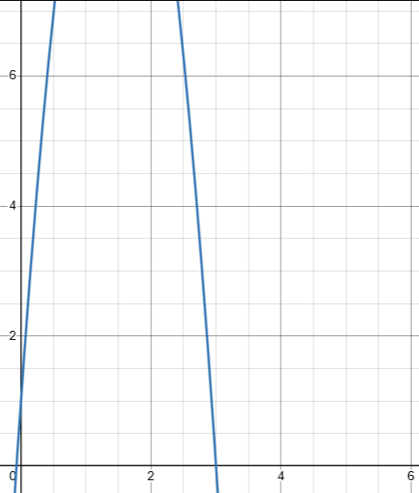
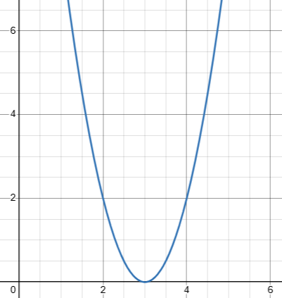
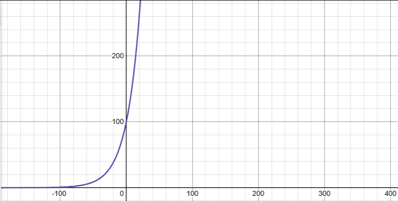

The graph shows the height above ground, in meters, of a ball x seconds after the ball was launched upward from a platform. Which statement is the best interpretation of the marked point (2.5, 6.3) in this context?
Question 2
The x-intercept of the graph shown is (x,0). What is the value of x?
Question 3
The function f is defined by f(x) = 5 + √x. What is the value of f(169)?
Question 4
What is the x-intercept of the graph shown

Question 5
The graph shown models the number of residents of a certain city as years after 2010.
How many residents does this model estimate the city had in 2010?

Question 6
y = (8w)(w).
A rectangle has a length that is 8 times its width. The given function calculates the area of the rectangle in square meters, where y > 0. Which of the following is the best interpretation of 8w in this context?
Question 7
The table shows the exponential relationship between the number of years, x, since Hans started training in pole vault, and the estimated height h(x), in meters, of her best pole vault for that year. Which of the following functions best represents this relationship, where x ≤ 5?
x
h(x)
0
1.25
2
2.18
4
3.80
Question 8
A rectangular volleyball court has an area of 200 square meters. If the length of the court is twice the width, what is the width of the court, in meters?
Question 9
g(x) = x² + 60. What is the minimum value of the given function?
Question 10
f(x) = 4,000(0.80)^x. A conservation scientist implemented a program to reduce the population of a certain species in an area. The given function estimates this species' population x years after 2010, where x ≤ 10. Which of the following is the best interpretation of 4,000 in this context?
Question 11
The first term of a sequence is 12. Each term after the first is 5 times the preceding term. If w represents the nth term of the sequence, which equation gives w in terms of n?
Question 12
f(x) = (x - 50)(x - 52). The function f is defined by the given equation. For what value of x does f(x) reach its minimum?
Question 13
The function g is defined by g(x) = (x + 20)(t - x), where t is a constant. In the xy-plane, the graph of y = g(x) passes through the point (30, 0). What is the value of g(0)?
Question 14
The population P of a certain city y years after the last census is modeled by the equation below, where r is a constant and p₀ is the population when y = 0: P = P₀(1 + r)^y. If during this time the population of the city decreases by a fixed percent each year, which of the following must be true?
Question 15
f(x) = |65 - 3x|. The function f is defined by the given equation. For which of the following values of k does f(k) = 4k?
Question 16
The function f is defined by f(x) = a^x + b, where a and b are constants and a > 0. In the xy-plane, the graph of y = f(x) has a y-intercept at (0, -30) and passes through the point (3, 34). What is the value of a + b?
Question 17
The function f(x) = (1/12)(x - 10)² + 5 gives a metal ball's height above the ground f(x), in inches, x seconds after it started moving on a track, where 0 ≤ x ≤ 15. Which of the following is the best interpretation of the vertex of the graph of y = f(x) in the xy-plane?
Question 18
In the xy-plane, a parabola has vertex (12, -18) and intersects the x-axis at two points. If the equation of the parabola is written in the form y = ax² + bx + c, where a, b, and c are constants, which of the following could be the value of a + b + c?
Question 19
The function f is defined by f(x) = (x + 5)(x + 2). The graph of f in the xy-plane is a parabola. Which of the following intervals contains the x-coordinate of the vertex of the graph of f?
Question 20
A right rectangular prism has a height of 12 inches. The length of the prism's base is x inches, which is 8 inches more than the width of the prism's base. Which function V gives the volume of the prism, in cubic inches, in terms of the length of the prism's base?